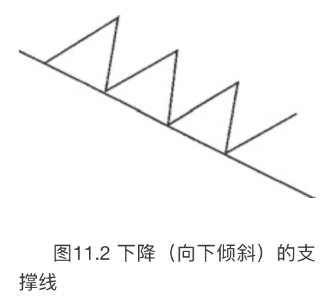

蜡烛图与趋势线
“有备而无患”
本章将把蜡烛图技术与趋势线、市场对趋势线的突破和假突破，以及突破支撑区域和阻挡区域等方面放到一起，进行综合研究。
向上倾斜的支撑线
如图11.1所示，是一条向上倾斜的支撑线。至少需要两个向上反弹的低点才能连接出这样一条直线，如果通过三个或者更多向上反弹的低点，那就更好。在蜡烛图上绘制上升的支撑线时，把蜡烛线下影线的低点作为连接点。这根支撑线表明，在这段时间里，买方比卖方更为主动、积极，因为在逐渐提升的新低点处，还能够引来新的需求。一般说来，这根线标志着市场上买方多于卖方。既然每一笔交易都同时需要一位买方和一位卖方，我更愿意认为，不是买方比卖方多，而是买方比卖方更为积极进取。

如图11.2所示，是一根向下倾斜的支撑线。正如在讨论图11.1时所说的，传统的支撑线是通过连接越来越高的低点得来的。不过，图11.2中的支撑线连接的则是越来越低的低点。下降的支撑线之所以有用武之地，是因为在市场上发生了许多实例，其价格是从下降的直线处向上反弹的。在缺少其他关于支撑水平的线索时，这样的直线给我们提供了潜在的支撑区域。在什么样的情形下不存在明显的支撑水平呢？当市场为当前行情创新低，特别是创纪录的新低的时候。

常规的上升支撑线因为向上倾斜，被视为具有看涨意义。下降的支撑线因为市场正在创造更低的低点，可被当作具有看跌意义的支撑线。如此一来，从这类支撑线上引发的向上反弹可能只是有限幅度的、不持久的。虽然如此，它可能构成了考虑买进的区域，特别是在若干技术指标在这类直线上汇聚起来的时候。
在图11.3中，11月22日的早晨出现了一个刺透形态。从这个刺透形态开始出现了一轮小规模的上涨行情，之后在12:30-13:00左右，市场回落到了62.50美元的区域。连接刺透形态的低点与几个小时后形成的接近62.50美元的低点，我们得到了一条上升的支撑线。这根线与11月22日晚间的某个时段相交，在相交处我们看到了一个刺透形态的变体（之所以说它是变体，是因为其中的白色蜡烛线的收市价没有向上超越之前黑色蜡烛线的中点）。本例说明，即便蜡烛图形态不太理想，但它依然可能提供行情反转信号。具体来说，虽然这不是一个理想的刺透形态，但是它来自那条上升的支撑线，因此其重要性得到了加持。对于多头已经控制市场，马上出现了进一步的增强信号，一个向上的窗口成功地测试了这条支撑线。该窗口在11月24日早间成为支撑区域。

在图11.4中，整个1月，根据图中一系列更低的低点来评估，亚马逊始终处在下降趋势中。连接低点L1和L2，提供了一条尝试性的支撑线。在L3处，当市场防守成功后，这条下降的支撑线的重要性得到了确认。于L4的低点处，市场对这条向下倾斜的支撑线试探成功了，并且形成了一个看涨的刺透形态。从本刺透形态开始的上冲行情在2月2日和3日之间打开了一个向上的窗口。一方面，在2月9日长长的白色蜡烛线之前，窗口的底边作为支撑水平保持完好；另一方面，在2月9日长长的白色蜡烛线之后，当前上冲行情遭遇了一根十字线（它也是一根流星线），被短路了。
如图11.5所示，通过A和B两处的低点连接成一条下降的支撑线，再加上C处的看涨吞没形态的低点。对该直线最终的试探来自D处，之后跟着出现了一根倒锤子线。倒锤子线的后一天是一根白色蜡烛线，两者组成了一个看涨吞没形态。事实上，如果看涨吞没形态的白色蜡烛线的收市价更高一些，就会形成一个启明星形态。尽管如此，由于倒锤子线、看涨吞没形态，以及下降的支撑线汇聚在一起，宛如一声“空头平仓！”的大吼。
下降的阻挡线
图11.6展示了一条典型的下降的阻挡线。至少需要两个向下反弹的高点才能连接出这样一条直线。当然，如果有三个或更多个高点，直线就更有影响力。它表示卖方比买方更为积极进取，因为卖方愿意在更低的高点上卖出。这条阻挡线表明，在这段时间中，卖方比买方更为大胆、积极，因为在逐渐降低的新高点处，依然吸引了卖方的卖出意愿。这根直线反映出市场正处于下降趋势中。在蜡烛图上绘制阻挡线时，方法是连接蜡烛线上影线的顶点。
常规的阻挡线是由一系列越来越低的高点连接而成的。但是，如果市场正处在历史的新高位置，不存在更早的高点可用来连成潜在的阻挡线，那怎么办呢？在这种情况下，我常常绘制上升的阻挡线。如图11.7所示，这是连接一系列更高的高点得来的（不同于下降的阻挡线通过连接更低的高点得来）。

在图11.8中，我们连接区域1、2和3，得到了一条经典的阻挡线。白银从区域2的孕线形态开始形成一轮下降行情，下降行情的底部形成了两根大风大浪蜡烛线。这是第一个征兆，表明市场向下的力量正在消散。在3月6日和7日之间，打开了一个向上的窗口，驱使趋势转而向上。窗口立即转化为支撑区域，随后几天的变化证明了这一点。
现在，蜡烛图上已经出现了反转信号，我们可以转向西方技术分析——这条阻挡线，来寻求价格目标。这构成了潜在的阻挡区域，3月13日所在的一周，市场陷于停顿，正说明了这一点。本图强调了我们离不开西方技术分析工具的原因，哪怕我们的注意力依然主要放在蜡烛图分析上。蜡烛图能够给出早期的反转信号，而西方工具能够提供价格目标和止损区域。
在图11.9中，4月12日（在2处）有一根长长的白色蜡烛线，其收市价创了新高，从而维持了多头趋势的力道。次日，一根小黑色实体成为组成2处的孕线形态的第二根蜡烛线，因而整个市场的基调都发生了转变。连接1和2两处的高点，得到了一条上升的阻挡线。该线5月中旬时在50美元左右与行情发生接触。接触点在区域3处，接近50美元的水平，另一个孕线形态与上升的阻挡线接触。（事实上，5月13日的上影线向上超过了前一天的价格区间，但是这一点并不否定此处的孕线形态，因为孕线形态只讲究实体的部分。）于是，蜡烛线为我们提供额外的证据（通过这个孕线形态和孕线形态第二根蜡烛线的长上影线），表明这条上升的阻挡线可能成为阻挡区域，即将发生防守性的行情。
看看图11.10，其中有一根向上倾斜的阻挡线。从5月中旬开始的价格变化表现为一系列越来越高的高点。然而，6月30日若干技术因素汇聚起来，在上升的阻挡线处，形成了一根近似十字线的蜡烛线（它同时组成了一个十字孕线形态），发出信号指示多头采取保护措施。请注意，在近似十字线的蜡烛线的后一天，在31美元和30美元之间打开了一个巨大的向下的窗口。市场持续下跌，直到7月初找到支撑区域才罢休。从该支撑区域而来的上涨行情杀了一个回马枪，到达上述窗口的顶边。
破低反涨形态与破高反跌形态
破高反跌形态与破低反涨形态的概念最初是根据理查德·威科夫（Richard Wyckoff）的有关思想发展起来的。他是20世纪初的一位很成功的交易者，也是一个行情通迅的出版商。
如图11.11所示，破低反涨形态发生在横向波动区间的支撑区域，起先市场向下突破了支撑区域，后来返回到曾经被跌破的支撑区域之上。换句话说，新低价格水平是不能维持的。一旦破低反涨形态形成，我们就能获得一个止损退出的区域，还有一个价格目标。如图11.11所示，如果某支撑区域最近被向下突破，但市场不能维持，很快回升到支撑区域之上，就可以考虑买进。如果市场坚挺，就不应当跌回最近的低点。最近的低点可以作为止损水平（最好以收市价为标准）。该破低反涨形态的价格目标要么是形态出现之前的行情高点，要么是之前横向交易区间的顶边。这一点将在本节后面的一些示例中进行说明。
如图11.12所示的为破高反跌形态。这种形态发生在横向区间的阻挡水平，市场起先向上突破了阻挡水平，但是多方无力维持新高价位。这其实是假突破现象换了一种说法。为了利用破高反跌形态来交易，当市场从先前的阻挡水平之上回落到其下方时，可以考虑卖出。如果市场果真疲软，它就不应该再涨回到最近的高点。下方的价格目标是市场最近的新低，或者是横向交易区间的底边。
虽然交易量并不是这里的主要议题，但是在破低反涨形态中，如果向下突破支撑水平的时候交易量较轻，随后向上反弹至最近跌破的支撑水平之上时交易量较重，就进一步增强了本形态的看涨意义。与之类似，在破高反跌形态中，如果向上突破阻挡水平时交易量较轻，随后回落至最近向上突破的阻挡水平之下时交易量较重，那么破高反跌形态成功的可能性也将进一步增加。
为什么破低反涨形态与破高反跌形态具有如此神奇的效用？要回答这个问题，就得谈到拿破仑的一段话。有人问他，他认为什么样的军队是最好的军队。他的回答简明扼要，“获胜的军队”。我们不妨把市场看作两支部队——牛方和熊方——拼杀的战场。当市场处于水平的交易区间时，双方拼力争夺的地盘特别明确，就是这块水平区间。其上方的水平阻挡线是熊方必守的最后防线，下方的水平支撑线是牛方必守的最后防线。如果空头不能守住在向下突破支撑水平后所创的新低价位，或者多头不能维护在向上突破阻挡水平后所创的新高价位，这一方就不能取得胜利。
在图11.13中，通过A、B和C三处揭示了一个阻挡区域，C处的十字线确认市场在1.7100-1.7150的区域犹豫不决。在C处十字线的下一时段，突然涌出一股需求，将英镑推升到阻挡线之上，冲击到1.74的水平。然而，多方的胜利昙花一现，很快市场便回落到了之前已经被冲破的位于A、B、C三处的阻挡区域之下。这就形成了破高反跌形态。如此一来，我们就得到了下方的价格目标：之前的上冲行情把我们带到了这个破高反跌形态，追本溯源，上冲行情的起点便成了现在的价格目标。这里涉及一定程度的主观取舍。在我看来，这轮上冲行情起始于1处；不过，或许有人认为这一段上涨行情的起始点应该在2处的看涨吞没形态。在这样的情形下，我建议首先选用一个保守的价格目标（1处），然后再自由发挥一下，选择2处作为备用价格目标。有意思的是，本例的1处成为市场暂时进入稳定状态的区域，经过一番曲折之后，市场也到达了自由发挥的价格目标（2处）。
本例在破高反跌形态之后形成了陡峭的下跌行情，让我想起了日本的一句老话：“把人送到百尺高楼上，却扛起梯子走了。”
有时候，交战的一方，比如大户交易商、商业账户经理，甚至可能是自营交易商，会派出小股的“侦察兵”（这是我的说法，不是蜡烛图的术语），前去试探对方部队的决心。举例来说，牛方可能向上推一推，企图使价格上升到一条阻挡线之上。在这样的交火中，我们就得密切关注牛方表现出的坚定程度。如果牛方这支侦察部队能够在敌方的土地上安营扎寨（也就是说，在数日内，市场的收市价都处于该阻挡线的上方），那么牛方的向上突破就成功了。牛方的新生力军将要增援这支先头部队，市场就将向上运动。只要这块滩头阵地掌握在牛方的手中（就是说，市场已经把这个旧的阻挡区转化为新的支撑区，并维持其支撑作用），那么牛方的部队就会控制着市场的局势。然而，一旦市场被打退到先前已经被向上突破的阻挡区域之下，那么牛方便失去了控制权。
在图11.14中，显示了这种“火力侦察兵”现象，让我们从这个角度来观察这里的破高反跌形态。9月底形成了一个阻挡区域，图中用两根水平线来做了标记。10月16日是一根拉长的白色蜡烛线，将股价推升到了阻挡区域之上。因为瞻博网络以收市价创新高，向上突破了这块明显的阻挡区，所以多方的“火力侦察兵”至少此时已经夺得了一块立足地。后一天，是一根黑色蜡烛线，其收市价证明牛方底气不足，不能守住新高价位，于是整个市场的基调为之一变。如此一来，破高反跌形态就形成了。破高反跌形态的高点在下一周发挥了阻挡作用，在10月23日完成看跌吞没形态之后，市场崩溃了。
我们为这个破高反跌形态设定的价格目标是前一个低点，即之前带领我们到达破高反跌形态的上涨行情的起始点。有人可能选择区域1，也有人可能选择区域2——正如我们在分析图11.13的英镑行情时所说的，这存在一定的主观性。我会选择1作为保守的价格目标，2作为备用目标。这个破高反跌形态案例还说明了，在采用这种技术手段的时候，并不需要清晰定义的阻挡水平。
在前面几个示例中，市场都是在一个时段以收市价向上超越阻挡区域，下一个时段再以收市价回落到先前被向上突破的阻挡区域之下。图11.15则说明，破高反跌形态也可以在单独一个时段之内完成。在4月初的A处，接近30美元，出现了两根小实体（其中一根是流星线），显示市场犹豫。在4月23日、26日和27日的B处，市场再度向上冲击该区域，形成了一个十字黄昏星形态。5月13日是一根流星线，日内行情一度将股票推升到超越30美元阻挡区域的地步。到本时段结束时，股票表现后继乏力，不能维持上述新高价位，收市价重新回到了上述阻挡区域之下。如此一来，一个破高反跌形态就竣工了，其价格目标为之前紧邻的低点26.25美元附近。5月24日和25日，该目标已经达到了。
在图11.16中，蜡烛线1、2和3维持了一个位于308.50上下的支撑水平。3月1日，空方打压市场到新低，稍稍低于306，试图建立滩头阵地。到本时段结束时，空方已经失去了控制权，指数收市于先前已经被向下突破的支撑水平308.50之上。于是，空方不能保住滩头阵地，由此形成了一个破低反涨形态。形成破低反涨形态的当日同时形成了一根锤子线。既然我们有了破低反涨形态，就有了价格目标。具体地说，这就是破低反涨形态的前一个高点，接近326。请注意，在A处和B处，指数已经上升到距离该目标几个点的范围内。这一现象揭示了技术工具具有一定的主观性。如果有人一定要等行情准确地到达价格目标，免不了大失所望，因为虽然市场很接近该目标，却没有触及它。
图11.16揭示了在单独一个时段内完成破低反涨形态的案例（在一个时段之内，市场起初创新低，再向上反弹，收市于先前被跌破的支撑水平之上）。图11.17则是在几个时段内形成破低反涨形态的案例。2月1日的收市价创了新低，向下突破了20美元处明显的支撑水平。后一天，多方卷土重来，正如日本人形容的，“神风突袭”，把股票推升到之前被向下突破的支撑区域之上。如此一来，该股票造就了一个破低反涨形态。价格目标是最近的高点，在1月底形成的，位于23.75美元处。在该高点处，一根十字线紧随在一根高高的白色蜡烛线之后。有趣的是，当股票回升到这里的时候，再次表现出犹豫，并且形成了相似的蜡烛线组合：2月9日和10日，前一根是长长的白色实体，后一根是十字线。
技术分析最强大的方面之一，是它有助于培养风险管理和资金管理的良好能力。因为在技术分析手段中，总是存在特定价格，证明我们的预测是错误的。在本例中，在2月2日的破低反涨形态之后，如果市场下跌到2月1日的低点之下，那么上述价格目标便不再有效，同时，这是应当重新推敲多头头寸的信号。
极性转换原则
日本人有句谚语：“大红的漆盘无须另外的装饰。”这种“简单的就是美好的”的概念，道破了市场技术分析理论的真谛。在蜡烛图分析的实践中，我常常对这一原则身体力行。这一原则既简单明白，又强大有力——过去的支撑水平演化为新的阻挡水平，过去的阻挡水平演化为新的支撑水平。这就是我所说的“极性转换原则”。如图11.18所示，就是过去的支撑水平转化为阻挡水平的情形。如图11.19所示，是过去的阻挡水平转化为新的支撑水平的情形。
关于极性转换原则（在传统的用语中，这个概念不是这样描述的），在各种介绍技术分析基础知识的书中，都是作为一条基本原理来讨论的。虽然如此，这块技术分析的瑰宝并没有得到充分利用。为了讲清楚这条规则如何具有普遍适用性、如何发挥其良好的功效，下面我们简要地研究一些实例。这些实例既包括不同的市场，也照顾到不同的时间范围。
在图11.20中，12月下旬，一场陡峭的抛售行情结束于5.35美元的水平（在A处）。当市场再一次向下试探这个水平的时候，至少有三类市场参与者可能要考虑买进。
第一群市场参与者可能是那些在12月下旬的抛售行情中一直等待市场稳定下来的人。现在，他们发现市场在这里受到了支撑，于是得到了一个入市参考点——5.35美元的水平（点A所示的低点）。几天以后，该支撑水平成功地经受住市场的试探（点B处），在这个过程中，很可能市场已经吸引了新的多头加盟。
第二群市场参与者可能是那些原来持有多头头寸，但是在12月下旬的抛售行情中被止损平仓的人。在这些被止损出市的老多头中，当他们看到1月中旬从点B到5.60美元的上涨行情时，可能有一部分人会觉得当初判断白银市场为牛市是正确的，只不过买进的时机没有选择好。现在，是买进的时候了。他们希望借此机会，证明自己当初的看法是有道理的。于是，等到市场再度向下回落到点C的时候，他们便重新买进，建立多头头寸。
第三群市场参与者可能是那些曾经在A处和B处买进的人。他们也注意到了从B开始的上涨行情，因此，如果有“合适的”价位，他们就可能为已有的头寸加码。在C处，市场返回了支撑水平，他们自然就得到了一个合适的价位。于是在C处，又出现了更多的买进者。依此类推，当市场再度向下撤回到D处的时候，自然还能吸引更多的看多者入市。
但是不久，问题就开始了。在2月下旬，价格向下突破了A、B、C和D处形成的支撑水平。2月28日是一根锤子线，有理由感到一点乐观。但是，曾经在这些旧的支撑区域买进的人，现在无一例外地处于亏损状态。
请您自问一下，在您的市场图表上，什么样的价格最重要？是当前趋势的最高价吗？是当前趋势的最低价吗？还是昨日的收市价？都不是。在任何图表上，最重要的价格是您开立头寸时的交易水平。人们与自己曾经买进或卖出过的价格水平结下了强烈的、切身的、情绪化的不解之缘。那些在5.35美元支撑区买进的多头现在“临时抱佛脚”“病急乱投医”，一心祈祷市场回到他们的盈亏平衡点。
于是，一旦市场上冲到这些多头者买进的区域（在5.35美元附近）附近，他们谢天谢地，赶紧乘机平回手上的多头头寸。这么一来，当初在A、B、C、D处买进的市场参与者，也许现在就变成了卖出者。这一点，正是过去的支撑水平演化成新的阻挡水平的主要缘由，如图上E和F处所示。
图11.21提供了一个经典的案例，突出显示了各种技术指标相互验证的过程。从9月中到10月初形成了一个支撑区域，在1435左右。10月初，这里被向下突破。10月12日和13日出现了一个刺透形态（其中的白色蜡烛线如此坚挺，几乎要形成看涨吞没形态了），标志着行情开始反弹。从本刺透形态开始的上涨行情将标准普尔指数推送到1425的区域，在这里我们遇到了一系列技术信号，它们相互验证。以下逐一介绍。
- 10月23日和24日组成了看跌吞没形态。
- 一条下降的阻挡线（图中虚线所示），通过连接9月底以来的高点而得。
- 先前位于1435上下的支撑区域，现在转化为阻挡区域。
在关于相互验证的本案例中，通过蜡烛图信号（看跌吞没形态）确认了两种西方技术指标（一条阻挡线和极性转换原则）。
极性转换原则不只是适用于确定的支撑水平，也可以应用于某个支撑区域。在图11.22中，有一个支撑区域（图上用两条水平线来表示），从116美元到117.50美元。4月3日，一旦该支撑区域的下边缘被向下突破，就可以应用极性转换原则。这么一来，上述116.00-117.50美元的区域原先是支撑区域，现在是阻挡区域。4月3日晚间，股票持续下跌，直到出现了一对锤子线，暗示行情已经进入稳定期。从锤子线开始出现上升行情，与一个乌云盖顶形态和4月4日早晨的极性转换现象不期而遇，两者相互验证，于是上升行情宣告结束。
在图11.23中，我们看到111.25美元左右有一个阻挡水平。一旦多头将宝洁捧到这个水平之上，我们则预期该水平转化为潜在的支撑水平。虽然12月14日从中午起到晚间形成了一系列小实体，使得当前趋势表现为中性，但是111.25美元作为支撑水平保持完好，市场前景依然维持在有利的一边。12月14日最后是两根带有长下影线的蜡烛线，从图形上验证了接近111.25美元的支撑水平。
图11.24中有一个明显的阻挡水平，3月17日出现了一根十字线，再度加强了这个水平。一旦指数向上突进到该阻挡水平之上，这个接近775的曾经屡次经受检验的阻挡水平便转化为支撑水平。这个案例为我们揭示了极性转换原则的一个重要方面：在应用本技巧之前，通常需要相应的支撑水平或阻挡水平经历过几次验证。
在图11.25中，2月初市场向上穿越了一条阻挡线。在2月16日所在的一周里，当价格小幅回落时，我们看到了若干技术指标汇聚在这里，其中2月20日的锤子线验证了上述支撑水平，后者是根据极性转换原则转变而来的。无独有偶，在另一场下降行情中，在同一个支撑水平处，接近29.75美元，又出现了一根锤子线，终结了下降行情。虽然这根锤子线确认了支撑水平，但是它并不提供价格目标。这里就要由西方技术分析工具大展拳脚了。通过从4月初到4月中的几个高点，可以绘制一条阻挡线。以这条直线作为潜在的阻挡水平，如果我们在锤子线出现后按照约31.50美元的水平买进，则可以把这条线作为价格目标。本图说明了将西方技术工具和蜡烛图技术相结合，两者相辅相成的实用性，及其带来的优势。既可以将西方技术指标与蜡烛图信号相互验证（在本图中，锤子线验证了极性转换而来的支撑水平），也可以用西方技术工具来获得潜在的价格目标（图中下降的阻挡线）。